본 포스트는 서울대학교 Chenglin Fan 교수님의 4190.407 Algorithms (Design and Analysis of Algorithms) 강의 자료(1강 Introduction, and multiplication!)를 바탕으로, 강의를 처음 듣는 독자도 논리적 흐름을 따라갈 수 있도록 재구성한 것입니다. 원본 슬라이드 표지에 명시되어 있듯 상당 부분은 Stanford의 Mary Wootters 교수님 슬라이드에서 가져온 것입니다.
한 줄 요약 (TL;DR)
“곱셈을 네 조각으로 쪼개면 아무것도 얻지 못하지만, 세 조각으로 쪼개면 \(n^2\)이 \(n^{1.6}\)이 됩니다.”
초등학교에서 배운 \(n\)자리 정수 곱셈은 모든 자릿수 쌍을 한 번씩 곱하므로 \(n^2\)번의 한 자리 곱셈을 필요로 합니다. 이를 개선하려고 분할 정복(divide and conquer)을 소박하게 적용하면 \(n\)자리 문제가 \(n/2\)자리 문제 4개로 쪼개지는데, 재귀 트리를 세어 보면 잎(leaf)의 개수가 \(4^{\log_2 n} = n^2\)이 되어 아무런 이득이 없습니다. 카라추바(Karatsuba)의 통찰은 \((a+b)(c+d) = ac + ad + bc + bd\)라는 항등식 하나로 네 번의 재귀를 세 번으로 줄일 수 있다는 것이고, 그 순간 잎의 개수가 \(3^{\log_2 n} = n^{\log_2 3} \approx n^{1.6}\)으로 떨어집니다. 이 한 편의 강의에서 알고리즘 설계 기법(분할 정복)과 분석 도구(점근적 분석)가 동시에 등장합니다.
1. 강의 개요 (Class Syllabus)
본격적인 내용에 앞서 강의 운영 방식을 정리합니다. 이 절은 원본 슬라이드의 Class Syllabus 부분(강의 시간, 동기 부여, 주제, 과제, 시험, 성적, 출석)을 순서대로 옮긴 것입니다.
- 강의 시간: 월/수 17:00–18:15
- 강의실: 302-105
- Office Hour: 수요일 오후 2:00–3:00
1.1. 우리는 왜 여기 있는가 (Why are we here?)
강의는 “우리는 알고리즘이 신나기 때문에 여기 있습니다(We are here because excited about algorithms!)”라는 다소 장난스러운 답으로 시작합니다. 그리고 곧바로 청중에게 같은 질문을 되돌려 줍니다 — “그럼 여러분은 왜 여기 있나요?”
수강생 입장에서의 답은 대체로 네 가지로 정리됩니다.
- 알고리즘은 기초적(fundamental)입니다.
- 알고리즘은 유용(useful)합니다.
- 알고리즘은 재미(fun!)있습니다.
- 그리고 현실적으로, 4190.407은 필수 과목(required course)입니다.
그런데 강의는 여기서 한 걸음 더 나갑니다. “그러면 4190.407은 왜 필수 과목인가?”를 묻고, 답으로 앞의 세 가지(기초적·유용함·재미있음)를 그대로 반복합니다. 즉 “필수라서 듣는다”는 이유조차 결국은 앞의 세 이유로 환원된다는 것입니다.
1.2. 알고리즘은 기초이고 유용하다 (Algorithms are fundamental and useful)
입력이 점점 커질수록, 좋은 알고리즘을 갖는 일은 점점 더 중요해집니다. 슬라이드는 운영체제, 뇌 과학, 컴파일러, 암호·보안, 대규모 네트워크, 단백질 구조와 같은 영역의 이미지를 나열하며 알고리즘이 컴퓨터과학 전반의 기반 언어임을 보여 줍니다.
여기에 조금 더 세속적인 동기도 솔직하게 덧붙습니다 — 빅테크의 코딩 인터뷰를 통과하기 위해서입니다.
1.3. 알고리즘은 재미있다 (Algorithms are fun!)
- 알고리즘 설계는 예술(art)이자 과학(science)입니다.
- 놀라운 결과(surprises)가 많습니다.
- 흥미로운 연구 문제(exciting research questions)가 많습니다.
이 강의의 첫 시간부터 등장하는 카라추바 알고리즘이 바로 그 “놀라움”의 첫 사례입니다. 3,000년 넘게 최선이라고 믿어 온 초등학교 곱셈이 사실 최선이 아니었다는 사실이, 고작 항등식 한 줄로 밝혀지기 때문입니다.
1.4. 이 수업을 이끄는 세 가지 질문 (Our guiding questions)
- 작동하는가? (Does it work?) — 알고리즘의 정확성(correctness)
- 빠른가? (Is it fast?) — 알고리즘의 효율성(efficiency)
- 더 잘할 수 있는가? (Can I do better?) — 하계(lower bound)와 개선의 여지
이 세 질문은 단순한 구호가 아니라, 오늘 강의의 실제 전개 순서이기도 합니다. 분할 정복 곱셈을 설계하고(작동하는가), 재귀 트리로 실행 시간을 세고(빠른가), 그 결과가 실망스러움을 확인한 뒤 카라추바로 넘어갑니다(더 잘할 수 있는가).
1.5. 강의를 최대한 활용하는 법 (How to get the most out of lectures)
| 시점 | 할 일 |
|---|---|
| 수업 전 (Before lecture) | eTL에 올라온 슬라이드/자료를 읽어 옵니다. |
| 수업 중 (During lecture) | 가능하면 실시간으로 참여하고 질문합니다. 수업 중 질문(in-class questions)에 적극적으로 관여합니다. |
| 수업 후 (After lecture) | eTL의 슬라이드를 다시 훑어봅니다. |
여기에 더해 리딩과 코딩(reading and coding)을 반드시 수행할 것이 강조됩니다. 수업 전이든 후든 본인에게 맞는 시점이면 되지만, 시험 직전 주에 “몰아서 따라잡으려” 하지 말 것을 명시적으로 경고합니다.
1.6. 다룰 주제 (Topics)
| # | 주제 | 예상 기간 |
|---|---|---|
| 1 | 점근적 표기법(asymptotic notations) 사용, 점화식(recurrence) 풀이 | 1–2주 |
| 2 | 분할 정복(Divide-and-Conquer) 알고리즘 | 2–3주 |
| 3 | 동적 계획법(Dynamic programming), 그리디 알고리즘(Greedy Algorithms) | 2–3주 |
| 4 | 그래프 알고리즘(Graph Algorithms) | 3–4주 |
| 5 | NP-난해성(NP-hardness), 근사 알고리즘(Approximation Algorithms) | 1–2주 |
오늘 1강은 이 중 1번(점근적 표기법)과 2번(분할 정복)을 동시에 맛보는 시간입니다.
1.7. 과제 (Homework)
- 격주 과제(biweekly assignments)입니다. 월요일 오후 11:59까지 게시되고, 그 다음다음 월요일 오후 11:59까지 제출합니다.
- 프로그래밍 언어는 Python입니다.
과제 수행 규칙은 다음과 같습니다.
- 자료를 참고해도 되지만, 동료와의 토론을 포함해 참고한 모든 출처를 인용(cite)해야 합니다.
- 자기 말로 작성(write in your own words)해야 합니다.
- 풀이의 PDF 버전과/또는 코드를 eTL에 제출합니다.
- 각 과제는 최대 2인 그룹으로 수행할 수 있으며, 그룹당 한 부만 제출합니다.
1.8. 시험 (Exams)
- 중간고사(Midterm, 20%): 10월 마지막 주. 그 주 이전까지의 모든 내용을 다룹니다.
- 기말고사(Final, 30%): 일정 미정(TBA). 전 범위를 다룹니다.
- 두 시험 모두 응시 가능한지 반드시 확인해야 하며, 중간고사 시간에 충돌이 있으면 가능한 한 빨리 담당 교수님께 이메일로 알려야 합니다.
슬라이드에는 중간고사 객관식 문항의 예시가 함께 제시됩니다.
1. Grade-school multiplication. 두 개의 \(n\)자리 정수 \((x_1 x_2 \dots x_n)\)과 \((y_1 y_2 \dots y_n)\)을 초등학교 곱셈 알고리즘으로 곱한다고 하자. 이 알고리즘에서 자릿수 \(x_i\)와 \(y_j\)의 쌍은 몇 번이나 곱해지는가?
- \(n^3\)
- \(2n - 1\)
- \(n^2\)
이 문항의 답은 \(n^2\)이며, 그 이유는 오늘 강의의 §4.4에서 다시 정확히 다루게 됩니다 — 모든 자릿수 쌍이 각각 한 번씩 따로 곱해지기 때문입니다. 첫 강의의 예시 문항이 곧바로 오늘의 핵심 논증과 맞닿아 있다는 점이 흥미롭습니다.
1.9. 성적 (Grading)
| 항목 | 비중 | 비고 |
|---|---|---|
| 과제(Homework) | 40% | 최저 점수 1회는 제외하고, 남은 5회를 동등한 가중치로 반영 |
| 중간고사(Midterm) | 20% | 10월 마지막 주 |
| 기말고사(Final) | 30% | 전 범위 |
| 출석(Attendance) | 10% | 일정 횟수 결석마다 1%씩 감점 |
- 과제 항목의 설명(“최저 1회 제외 후 남은 5회”)을 그대로 읽으면 총 6회의 과제가 출제되는 셈입니다.
- 출석은 전자 출결(Electronic Attendance)로 관리되므로 카드 태깅을 잊지 않아야 합니다. (감점 기준이 되는 결석 횟수는 원본 슬라이드에 공란으로 남아 있습니다.)
- 학점 경계(letter grade thresholds)는 고정되어 있지 않으며, 학기 말에 교수자가 판단한 수행 수준(A+, A, A−, B+, B 등)에 따라 결정됩니다.
1.10. 출석 정책 (SNU Attendance Policy)
전체 수업일수의 1/3을 초과하여 결석한 학생은 “F” 또는 “U” 학점을 받습니다. 이는 강의 자체의 감점 규칙(성적의 10%)과는 별개로 적용되는 학교 차원의 규정입니다.
2. 처음부터 시작해 봅시다 (Let’s start at the beginning)
이제 본론입니다. 알고리즘 수업을 여는 문제로 강의가 고른 것은 놀랍게도 초등학교 3학년 때 배운 곱셈입니다.
2.1. 정수 곱셈 (Integer Multiplication)
시작은 소박합니다.
\[ \begin{array}{r} 44 \\ \times\ 97 \\ \hline \end{array} \]
이 정도는 암산으로도 되지만, 자릿수를 늘려 보면 이야기가 달라집니다.
\[ \begin{array}{r} 1234567895931413 \\ \times\ 4563823520395533 \\ \hline \end{array} \]
여기서 강의는 진짜 질문을 던집니다. 두 수가 각각 \(n\)자리라고 할 때,
초등학교 곱셈 알고리즘은 얼마나 빠른가? (몇 번의 한 자리 연산이 필요한가?)
2.2. 초등학교 곱셈 알고리즘은 얼마나 빠른가
강의는 이 질문을 Think-pair-share로 던진 뒤, 다음과 같이 비용을 셉니다.
- 최대 \(n^2\)번의 곱셈: 위쪽 수의 각 자릿수와 아래쪽 수의 각 자릿수를 모두 한 번씩 곱해야 합니다.
- 그리고 최대 \(n^2\)번의 덧셈: 자리 올림(carry)을 처리하기 위한 비용입니다.
- 그리고 \(n\)개의 \(2n\)자리 수를 더해야 합니다: 부분곱(partial product)들을 최종적으로 합산하는 비용입니다.
왜 곱셈이 정확히 \(n^2\)번인지는 자릿수 전개로 확인할 수 있습니다. \(x\)와 \(y\)를 각각 \(n\)자리 정수라 하고
\[ x = \sum_{i=1}^{n} x_i \cdot 10^{\,n-i}, \qquad y = \sum_{j=1}^{n} y_j \cdot 10^{\,n-j} \]
로 쓰면, 분배법칙에 의해
\[ xy = \left( \sum_{i=1}^{n} x_i 10^{\,n-i} \right)\left( \sum_{j=1}^{n} y_j 10^{\,n-j} \right) = \sum_{i=1}^{n} \sum_{j=1}^{n} x_i y_j \cdot 10^{\,2n-i-j} \]
가 됩니다. 이중합의 항의 개수가 정확히 \(n \times n = n^2\)이고, 각 항의 \(x_i y_j\)가 바로 한 자리 곱셈 한 번입니다. 초등학교 알고리즘은 이 \(n^2\)개의 항을 하나도 빠짐없이, 그리고 하나도 겹치지 않게 계산합니다.
2.3. 빅오 표기법 (Big-Oh Notation)
이렇게 얻은 비용을 부르는 이름이 있습니다.
초등학교 곱셈(Grade-School Multiplication)은 “\(O(n^2)\) 시간에 동작한다(runs in time \(O(n^2)\))”고 말합니다.
- 형식적인 정의는 다음 시간에 다룹니다.
- 비형식적으로, 빅오 표기법은 실행 시간이 입력의 크기에 따라 어떻게 스케일(scale)하는지를 알려 줍니다.
이 “스케일한다”는 표현이 왜 중요한지가 이어지는 세 장의 실측 슬라이드의 주제입니다.
2.4. 실측 1: 파이썬으로 노트북에서 (Implemented in Python, on a laptop)
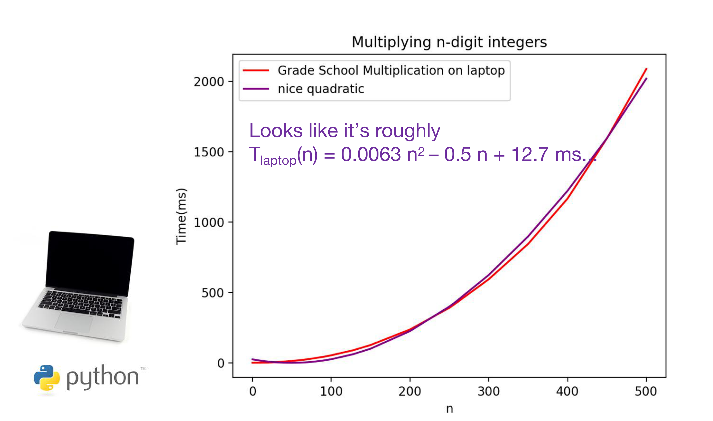
측정된 실행 시간은 다음 이차식으로 근사됩니다.
\[ T_{\text{laptop}}(n) \;=\; 0.0063\,n^2 \;-\; 0.5\,n \;+\; 12.7 \ \text{ms} \]
2.5. 실측 2: 손으로 (Implemented by hand)
그렇다면 이 \(0.0063\)이나 \(-0.5\) 같은 계수가 알고리즘의 본질일까요? 강의는 같은 알고리즘을 사람이 손으로 수행했을 때를 겹쳐 그려 이 질문에 답합니다.
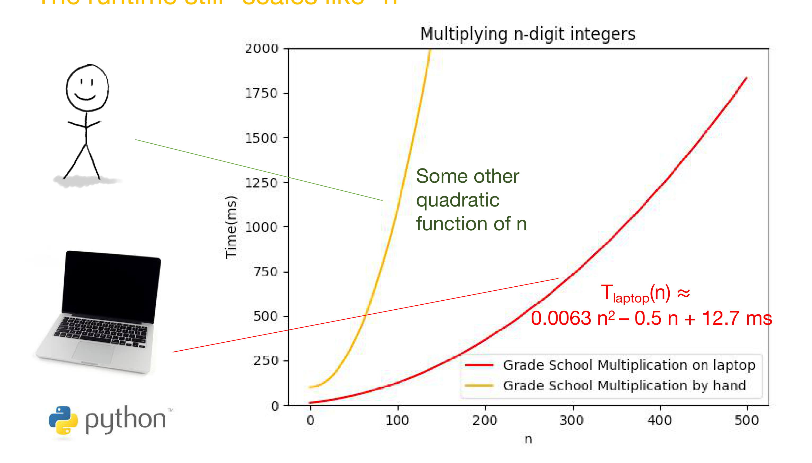
노트북이든 사람 손이든, 심지어 프로그래밍 언어를 바꾸든 바뀌는 것은 이차식의 계수뿐이고 “이차식”이라는 사실은 바뀌지 않습니다. 계수는 하드웨어·구현·언어에 속한 양이고, 차수 \(n^2\)은 알고리즘 자체에 속한 양입니다. 점근적 분석이 상수를 무시하는 이유는 게을러서가 아니라, 알고리즘에 귀속되는 부분만 남기기 위해서입니다.
2.6. n을 더 키워 봅시다 (Let n get bigger…)
계수가 아니라 차수가 본질이라면, 차수가 다른 알고리즘이 있다면 어떻게 될까요? 강의는 여기서 가상의 “마법사의 알고리즘(Wizard’s algorithm)”을 등장시킵니다.
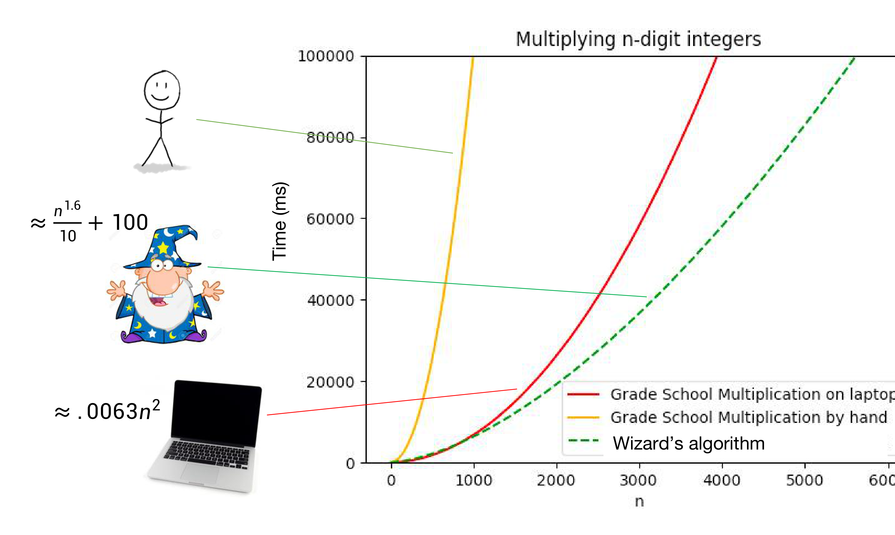
세 곡선의 형태를 정리하면 다음과 같습니다.
| 수행 주체 | 실행 시간(근사) | 차수 |
|---|---|---|
| 손으로 하는 초등학교 곱셈 | \(n\)에 대한 어떤 이차함수 | \(n^2\) |
| 노트북에서의 초등학교 곱셈 | \(\approx 0.0063\,n^2\) | \(n^2\) |
| 마법사의 알고리즘 | \(\approx \dfrac{n^{1.6}}{10} + 100\) | \(n^{1.6}\) |
2.7. 교훈 (Take-away)
\(O(n^{1.6})\) 시간에 동작하는 알고리즘은 \(O(n^{2})\) 시간에 동작하는 알고리즘보다 “더 좋다(better)”.
마법사 알고리즘은 상수 항 \(+100\)을 지불하고 시작하는데도, 그리고 작은 \(n\)에서는 실제로 더 느린데도, 충분히 큰 \(n\)에서는 반드시 이깁니다. 지수 \(1.6\)과 \(2\)의 차이는 어떤 상수로도 메울 수 없습니다.
2.8. 더 잘할 수 있을까? (Can we do better?)
그러면 이제 질문은 하나로 좁혀집니다.
\(n\)자리 정수를 \(O(n^2)\)보다 빠르게 곱할 수 있는가?
이것이 오늘 강의의 나머지 전부를 이끄는 질문입니다.
3. 알고리즘 도구상자를 열어 봅시다: 분할 정복 (Let’s dig into our algorithmic toolkit: Divide and conquer)
3.1. 분할 정복이란 (Divide and conquer)
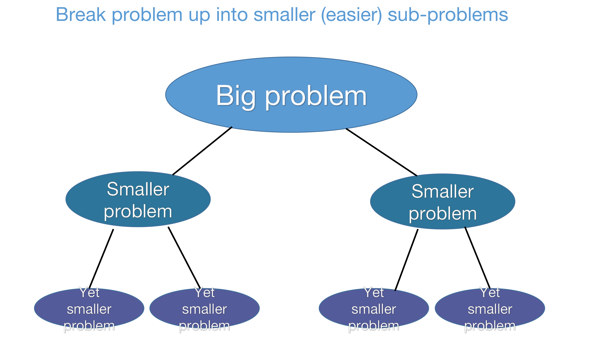
문제를 더 작고 더 쉬운 부분 문제들로 쪼개어(divide), 각각을 재귀적으로 풀고(conquer), 그 답들을 합쳐(combine) 원래 문제의 답을 얻는 알고리즘 설계 기법입니다.
3.2. 곱셈에 대한 분할 정복 (Divide and conquer for multiplication)
곱셈에 이 기법을 적용하려면 먼저 정수를 쪼개는 방법이 필요합니다. 10진수 표기에서는 자명합니다.
\[ 1234 = 12 \times 100 + 34 \]
이제 두 개의 4자리 수를 곱해 봅니다.
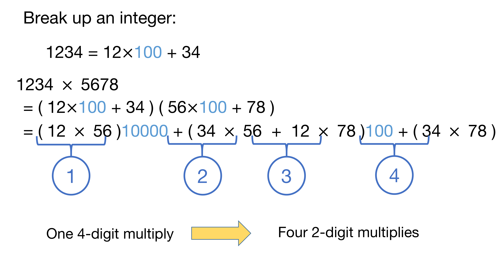
전개 과정을 한 줄씩 따라가 보겠습니다.
\[ \begin{aligned} 1234 \times 5678 &= (12 \times 100 + 34)\,(56 \times 100 + 78) \\[4pt] &= (12 \times 56)\cdot 10000 \;+\; (34 \times 56 \;+\; 12 \times 78)\cdot 100 \;+\; (34 \times 78) \end{aligned} \]
한 번의 4자리 곱셈이 네 번의 2자리 곱셈으로 바뀌었습니다. 이를 일반화하면, \(n\)이 짝수일 때 \(n\)자리 수 \(x, y\)를 각각 \(n/2\)자리씩 앞뒤로 쪼개어
\[ x = a \cdot 10^{n/2} + b, \qquad y = c \cdot 10^{n/2} + d \]
로 쓸 수 있습니다(여기서 \(a, b, c, d\)는 모두 \(n/2\)자리 수입니다). 그러면
\[ \begin{aligned} xy &= \left(a \cdot 10^{n/2} + b\right)\left(c \cdot 10^{n/2} + d\right) \\[4pt] &= ac \cdot 10^{n/2} \cdot 10^{n/2} \;+\; ad \cdot 10^{n/2} \;+\; bc \cdot 10^{n/2} \;+\; bd \\[4pt] &= ac \cdot 10^{n} \;+\; (ad + bc)\cdot 10^{n/2} \;+\; bd \end{aligned} \]
가 됩니다. 오른쪽 변에 등장하는 곱셈은 \(ac,\ ad,\ bc,\ bd\)의 네 개이고, 각각은 \(n/2\)자리 수끼리의 곱입니다. \(10^n\)이나 \(10^{n/2}\)을 곱하는 일은 자릿수를 밀어 주는(shift) 작업이라 곱셈으로 치지 않습니다.
3.3. 분할 정복 알고리즘 (Divide and conquer algorithm)
지금까지의 관찰을 의사코드로 옮기면 다음과 같습니다.
Multiply(x, y): # x, y 는 n 자리 수
If n = 1:
Return xy # 기저 사례: 한 자리 곱셈은 구구단으로 즉시 처리
Write x = a · 10^(n/2) + b # a, b 는 n/2 자리 수
Write y = c · 10^(n/2) + d # c, d 는 n/2 자리 수
# 네 개의 부분곱을 재귀적으로 계산한다
ac = Multiply(a, c)
ad = Multiply(a, d)
bc = Multiply(b, c)
bd = Multiply(b, d)
# 자릿수를 밀어 더해서 xy 를 얻는다
xy = ac · 10^n + (ad + bc) · 10^(n/2) + bd
Return xy원본 슬라이드가 스스로 인정하듯, 위 의사코드에는 정리되지 않은 구멍이 남아 있습니다.
- \(n\)이 2의 거듭제곱이라고 가정하고 있습니다. 그래야 \(n/2\)가 계속 정수로 유지됩니다.
- \(n\)이 홀수일 때는 어떻게 처리해야 하는가?
- “\(10^n\)을 곱하는 연산”은 실제로 어떻게 구현해야 하는가?
이 세 가지는 강의가 독자에게 남긴 연습 문제이며, 실제 동작하는 코드는 Lecture 1 Python 노트북에서 확인할 수 있습니다.
3.5. 재귀 트리 (Recursion Tree)
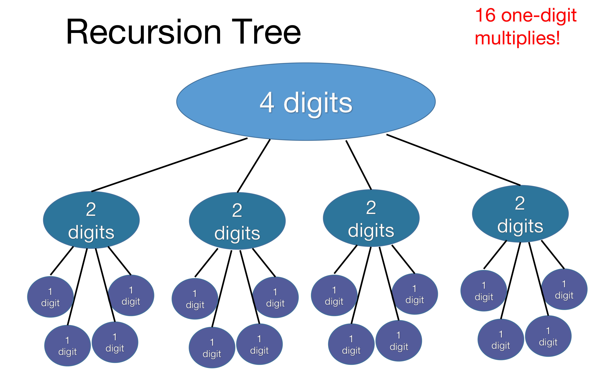
\(n = 4\)일 때 잎의 개수는 \(16 = 4^2 = n^2\)입니다. 초등학교 알고리즘과 정확히 같은 수입니다. 불길한 신호입니다.
4. 실행 시간은 얼마인가? (What is the running time?)
방금 만든 분할 정복 알고리즘은 초등학교 알고리즘보다 더 나은가, 더 나쁜가? 강의는 이 질문에 답하는 두 가지 방법을 제시합니다.
- 직접 돌려 본다 (Try it.)
- 해석적으로 이해한다 (Try to understand it analytically.)
4.1. 방법 1: 직접 돌려 본다 (Try it.)
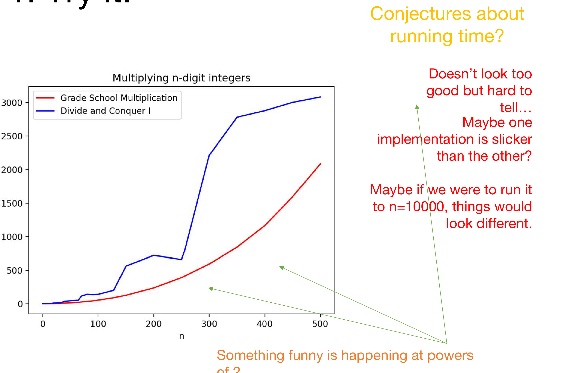
실험은 분할 정복 쪽이 더 느리다고 말하지만, 실험만으로는 다음과 같은 반론을 배제할 수 없습니다.
- 한쪽 구현이 더 매끄러운(slicker) 것일 수 있습니다.
- \(n\)을 10000까지 키우면 양상이 뒤집힐 수도 있습니다.
- 파란 곡선이 2의 거듭제곱 근처에서 계단처럼 튀는 현상도 설명이 필요합니다.
그래서 해석적 분석이 필요합니다.
4.2. 방법 2: 해석적으로 이해한다 (Try to understand it analytically)
강의는 먼저 하지 말아야 할 논증을 보여 줍니다.
“이 알고리즘은 초등학교 알고리즘보다 반드시 빠를 것이다. 왜냐하면 우리가 이것을 알고리즘 수업에서 배우고 있기 때문이다.”
원본 슬라이드는 이 논증에 큼직한 빨간 X 표시를 하고 “Not sound logic!”이라고 적어 둡니다. 강의에서 다룬다는 사실은 그 알고리즘이 좋다는 근거가 되지 않습니다 — 실제로 이 절의 결론은 이 알고리즘이 전혀 좋지 않다는 것입니다.
4.3. 주장: 적어도 \(n^2\)번의 연산이 필요하다
이 알고리즘의 실행 시간은 적어도 \(n^2\)번의 연산(AT LEAST \(n^2\) operations)이다.
이것은 상계(upper bound)가 아니라 하계(lower bound) 형태의 주장이라는 점에 유의해야 합니다. “잘해 봐야 \(n^2\)”이라는 뜻이므로, 초등학교 알고리즘을 이길 가능성이 원천적으로 봉쇄됩니다.
4.4. 1자리 곱셈은 몇 번인가 (How many one-digit multiplies?)
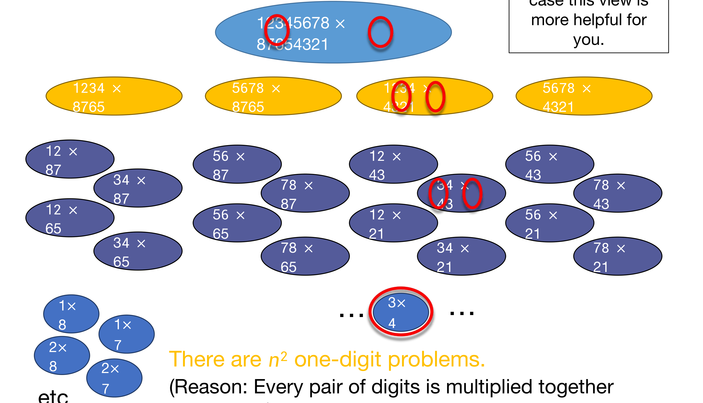
이 그림의 논증은 §2.2에서 초등학교 알고리즘에 대해 했던 것과 정확히 같습니다. 분할 정복은 곱셈을 재배열했을 뿐, \(x_i y_j\)라는 \(n^2\)개의 항을 하나도 줄이지 못했습니다.
4.5. \(n^2\)개의 1자리 문제 (There are \(n^2\) 1-digit problems)
같은 결론을 재귀 트리의 층(level) 단위로 세어 보면 더 일반적인 형태로 얻어집니다.
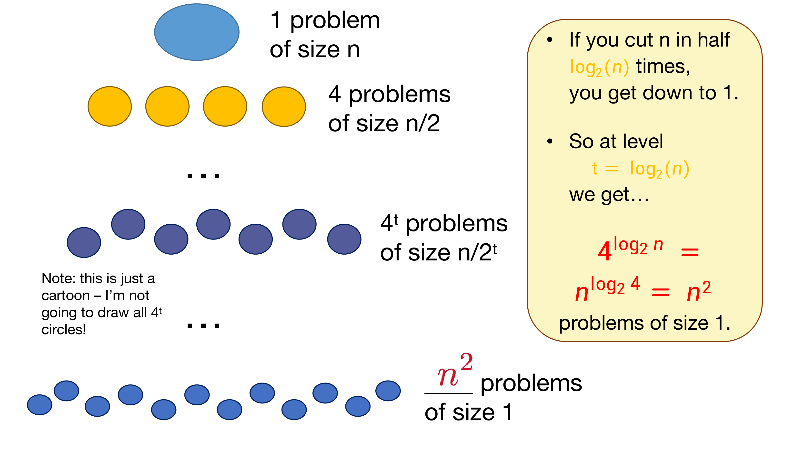
논증을 단계별로 정리하면 다음과 같습니다.
- 층 0: 크기 \(n\)인 문제가 \(1\)개.
- 층 1: 크기 \(n/2\)인 문제가 \(4\)개.
- 층 \(t\): 크기 \(n/2^t\)인 문제가 \(4^t\)개.
- \(n\)을 절반으로 \(\log_2 (n)\)번 자르면 크기 1에 도달합니다. 즉 잎이 있는 층은 \(t = \log_2 (n)\)입니다.
- 따라서 잎의 개수는 \[ 4^{\log_2 n} \;=\; n^{\log_2 4} \;=\; n^{2}. \]
이 강의에서 앞으로 계속 쓰게 될 지수·로그 항등식이므로 한 번 확인해 두면 좋습니다. \(a = b^{\log_b a}\)이므로
\[ a^{\log_b n} = \left(b^{\log_b a}\right)^{\log_b n} = b^{\,\log_b a \,\cdot\, \log_b n} = \left(b^{\log_b n}\right)^{\log_b a} = n^{\log_b a}. \]
지금의 경우 \(a = 4\), \(b = 2\)이므로 \(4^{\log_2 n} = n^{\log_2 4} = n^2\)입니다. 밑(4)이 지수 자리로 올라가 \(\log_2 4 = 2\)가 된다는 점이 요점이며, 곧 보게 되듯 이 \(4\)를 \(3\)으로 바꾸는 것만으로 지수가 \(2\)에서 \(\log_2 3 \approx 1.6\)으로 내려갑니다.
4.6. 조금 실망스럽습니다 (That’s a bit disappointing)
그 모든 수고를 하고도 여전히 (적어도) \(O(n^2)\)입니다. 분할 정복이라는 강력한 도구를 꺼내 들었지만, 분기 수(branching factor)가 4라는 것이 모든 이득을 삼켜 버렸습니다. §4.1의 실측에서 오히려 느렸던 이유도 여기에 있습니다 — 잎의 개수는 같은데 재귀 호출과 자릿수 이동이라는 추가 비용만 얹힌 셈이기 때문입니다.
But wait!! — 강의는 여기서 멈추지 않습니다.
5. 분할 정복은 실제로 진전을 만들 수 있습니다 (Divide and conquer can actually make progress)
5.1. 카라추바의 아이디어: 세 번이면 충분하다
문제의 식을 다시 봅니다.
\[ \begin{aligned} xy &= \left(a \cdot 10^{n/2} + b\right)\left(c \cdot 10^{n/2} + d\right) \\[4pt] &= ac \cdot 10^{n} + (ad + bc)\cdot 10^{n/2} + bd \end{aligned} \]
여기서 결정적인 관찰이 나옵니다. 우리가 실제로 필요한 것은 세 개(ac, \(ad+bc\), bd)뿐입니다. \(ad\)와 \(bc\)를 따로따로 알 필요는 없고, 오직 그 합만 있으면 됩니다.
네 개가 아니라 세 개에 대해서만 재귀할 수 있다면 좋을 텐데…
카라추바(Karatsuba)가 바로 그 방법을 찾아냈습니다.
5.2. 카라추바 정수 곱셈 (Karatsuba integer multiplication)
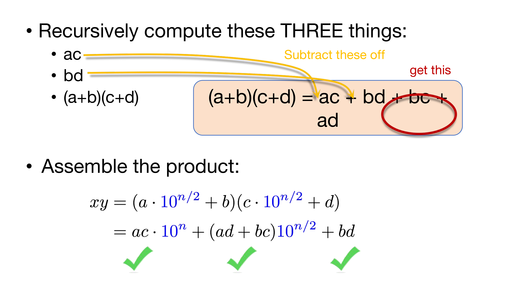
트릭 자체는 중학교 수준의 항등식 한 줄입니다.
\[ (a+b)(c+d) \;=\; ac + ad + bc + bd \]
양변에서 \(ac\)와 \(bd\)를 빼면
\[ ad + bc \;=\; (a+b)(c+d) \;-\; ac \;-\; bd \]
를 얻습니다. 즉 \(ad\)와 \(bc\)를 각각 계산하지 않고도 그 합을 얻을 수 있습니다. 필요한 재귀 곱셈은 다음 셋뿐입니다.
- \(ac\)
- \(bd\)
- \(z := (a+b)(c+d)\)
그리고 \(ad + bc = z - ac - bd\)는 뺄셈 두 번으로 얻습니다. 곱셈 한 번을 덧셈·뺄셈 몇 번과 맞바꾼 셈인데, 재귀에서는 이 교환이 압도적으로 유리합니다.
이 교환이 유리한 이유는 이렇습니다. 덧셈과 뺄셈은 \(n\)자리에 대해 \(O(n)\) 시간이면 충분하지만, 곱셈은 그보다 훨씬 비쌉니다. 그런데 재귀에서 진짜로 문제가 되는 것은 개별 연산의 비용이 아니라 분기 수입니다. 분기 수가 4에서 3으로 줄면 잎의 개수가 \(4^{\log_2 n}\)에서 \(3^{\log_2 n}\)으로 바뀌는데, 이는 지수 자리의 변화이므로 덧셈 몇 번을 더 하는 상수 수준의 손해와는 비교가 되지 않습니다.
5.3. 알고리즘은 어떻게 동작하는가 (How would this work?)
Multiply(x, y): # x, y 는 n 자리 수
If n = 1:
Return xy # 기저 사례
Write x = a · 10^(n/2) + b # a, b 는 n/2 자리 수
Write y = c · 10^(n/2) + d # c, d 는 n/2 자리 수
ac = Multiply(a, c) # 재귀 ①
bd = Multiply(b, d) # 재귀 ②
z = Multiply(a + b, c + d) # 재귀 ③ — 이 한 번이 ad 와 bc 를 동시에 담당한다
# z - ac - bd = ad + bc 이므로, 곱셈 없이 가운데 항이 얻어진다
xy = ac · 10^n + (z - ac - bd) · 10^(n/2) + bd
Return xy이 의사코드 역시 “아직 그리 정밀하지 않으며(still not super precise)”, \(n\)이 2의 거듭제곱이라는 가정을 그대로 유지하고 있습니다. 실제 구현은 IPython 노트북을 참고하라고 안내되어 있습니다.
덧붙여, \(a+b\)와 \(c+d\)는 \(n/2\)자리를 넘어 \(n/2 + 1\)자리가 될 수 있습니다. 재귀 ③이 엄밀히는 \(n/2\)자리 문제가 아니라는 뜻인데, 이 한 자리의 초과가 점근적 결론을 바꾸지 않는다는 사실은 점화식을 정식으로 다룰 때 확인하게 됩니다.
5.4. 실행 시간은? (What’s the running time?)
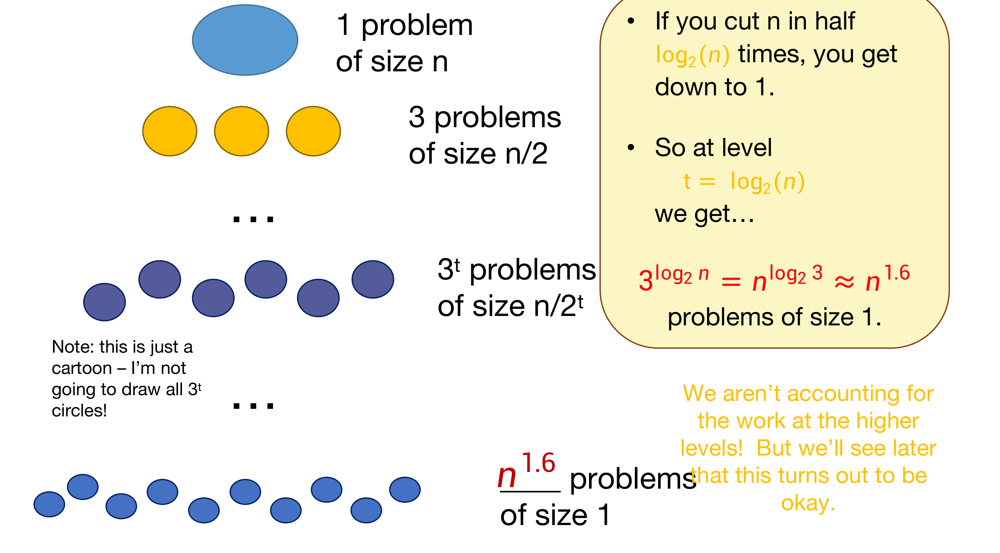
Figure 9와 완전히 같은 논증을 분기 수 3에 대해 반복합니다.
- 층 0: 크기 \(n\)인 문제가 \(1\)개.
- 층 1: 크기 \(n/2\)인 문제가 \(3\)개.
- 층 \(t\): 크기 \(n/2^t\)인 문제가 \(3^t\)개.
- 잎이 있는 층은 여전히 \(t = \log_2 (n)\)입니다.
- 따라서 잎의 개수는 \[ 3^{\log_2 n} \;=\; n^{\log_2 3} \;\approx\; n^{1.585} \;\approx\; n^{1.6}. \]
카라추바 정수 곱셈은 \(O(n^{\log_2 3}) \approx O(n^{1.6})\) 시간에 동작합니다.
바뀐 것은 재귀 호출의 횟수 단 하나(4 → 3)뿐인데, 그것이 지수 자리에서 \(\log_2 4 = 2\)를 \(\log_2 3 \approx 1.585\)로 끌어내렸습니다. §2.6의 “마법사의 알고리즘”이 바로 이것이었습니다.
위 계산은 잎의 개수만 셌을 뿐, 상위 층에서 수행되는 덧셈·뺄셈·자릿수 이동의 비용을 계산에 넣지 않았습니다. 각 층에서 \(O(n)\) 규모의 작업이 발생하므로 이를 모두 더해야 완전한 분석이 됩니다.
강의는 “나중에 보면 괜찮은 것으로 판명된다”고만 예고하는데, 이는 점화식(recurrence)과 마스터 정리(Master Theorem)를 다룰 때 정식으로 해결됩니다. 결론을 미리 말하면, 잎의 개수가 지배적이어서 총 실행 시간도 \(\Theta(n^{\log_2 3})\)입니다.
5.5. 훨씬 좋습니다 (This is much better!)
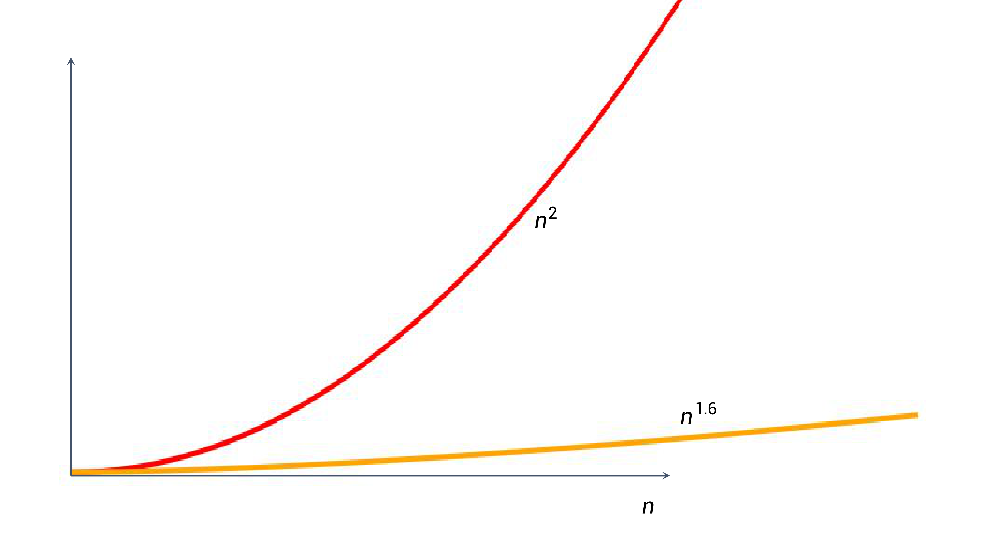
5.6. 실제로도 확인됩니다 (We can even see it in real life!)
이론적 개선은 실측에서도 그대로 나타납니다.
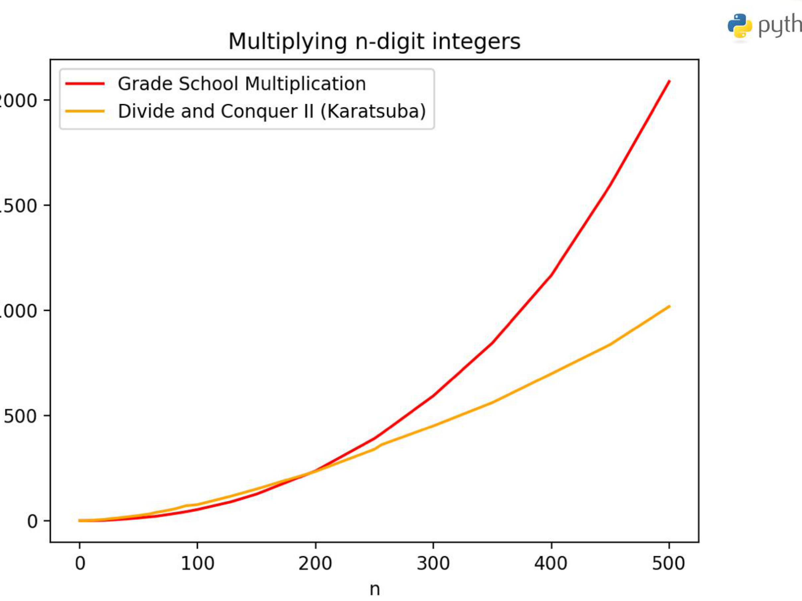
6. 더 잘할 수 있을까? (Can we do better?)
카라추바가 끝이 아닙니다. 정수 곱셈의 역사는 이후로도 계속됩니다.
| 알고리즘 | 연도 | 실행 시간 |
|---|---|---|
| Toom-Cook | 1963 | \(O(n^{1.465})\) |
| Schönhage–Strassen | 1971 | \(O(n \log (n) \log\log (n))\) |
| Fürer | 2007 | \(n \log (n) \cdot 2^{O(\log^{*}(n))}\) |
| Harvey and van der Hoeven | 2019 | \(O(n \log (n))\) |
Toom-Cook은 카라추바의 자연스러운 일반화입니다. 카라추바가 “\(n/2\) 크기의 문제 3개”로 쪼갰다면, Toom-Cook은 “\(n/3\) 크기의 문제 5개”로 쪼갭니다.
§4.5에서 세운 층 세기 논증을 그대로 반복하면 됩니다. 크기 \(n\)을 3분의 1로 자르므로 크기 1에 도달하기까지 \(\log_3 (n)\)개의 층이 필요하고, 각 층에서 분기 수가 5이므로 잎의 개수는
\[ 5^{\log_3 n} \;=\; n^{\log_3 5} \;=\; n^{\ln 5 / \ln 3} \;\approx\; n^{1.465} \]
가 됩니다. 요컨대 분기 수를 밑으로, 분할 비율을 로그의 밑으로 놓는 같은 공식(\(\text{분기 수}^{\log_{\text{분할 비율}} n} = n^{\log_{\text{분할 비율}} \text{분기 수}}\))이 세 알고리즘 모두에 적용됩니다.
| 알고리즘 | 분할 비율 | 분기 수 | 지수 |
|---|---|---|---|
| 소박한 분할 정복 | 2 | 4 | \(\log_2 4 = 2\) |
| 카라추바 | 2 | 3 | \(\log_2 3 \approx 1.585\) |
| Toom-Cook | 3 | 5 | \(\log_3 5 \approx 1.465\) |
원본 슬라이드는 “\(n\) 크기의 문제를 어떻게 \(n/3\) 크기의 문제 5개로 쪼갤 수 있는지 직접 생각해 보라”는 연습 문제를 남기며, 아홉 개의 \(n/3\) 크기 문제에서 출발하라는 힌트를 줍니다. 카라추바가 \(2\times 2 = 4\)개에서 3개로 줄였듯, Toom-Cook은 \(3 \times 3 = 9\)개에서 5개로 줄이는 것입니다.
Schönhage–Strassen 이후의 알고리즘들은 고속 푸리에 변환(FFT)에 기반하며, 원본 슬라이드도 “이건 그냥 재미로 소개하는 것이니 알 필요는 없다(This is just for fun, you don’t need to know these algorithms!)”고 명시합니다. 다만 2019년에 이르러 \(O(n \log n)\)이 달성되었다는 사실은 기억해 둘 만합니다.
7. 오늘의 목표 (Today’s goals)
한 시간 동안 세 가지를 얻었습니다.
| 층위 | 얻은 것 |
|---|---|
| 구체적인 알고리즘 | 카라추바 정수 곱셈(Karatsuba Integer Multiplication) |
| 알고리즘 설계 기법(Algorithmic Technique) | 분할 정복(Divide and conquer) |
| 알고리즘 분석 도구(Algorithmic Analysis tool) | 점근적 분석 입문(Intro to asymptotic analysis) |
첫 강의부터 “구체적 사례 → 일반적 기법 → 분석 도구”라는 세 층위가 함께 등장했다는 점이 중요합니다. 앞으로의 모든 강의가 이 구조를 반복합니다.
8. 다음 시간 (Next time)
- 정렬(Sorting!)
- 점근적 분석과 (형식적인) 빅오 표기법(Asymptotics and (formal) Big-Oh notation)
- 분할 정복 더 알아보기(Divide and Conquer some more)
오늘 §2.3에서 “형식적인 정의는 다음 시간에”라고 미뤄 둔 빅오 표기법과, §5.4에서 “나중에 보면 괜찮다”고 예고한 상위 층 비용 계산이 모두 다음 강의의 몫입니다.
정리하며 (Closing Remarks)
이번 강의의 논리 사슬을 한 장으로 요약하면 다음과 같습니다.
| 단계 | 내용 | 근거 |
|---|---|---|
| ① 문제 설정 | \(n\)자리 정수 곱셈은 얼마나 빠른가 | Integer Multiplication |
| ② 기준선 | 초등학교 곱셈은 모든 자릿수 쌍을 한 번씩 곱하므로 \(O(n^2)\) | \(xy = \sum_i \sum_j x_i y_j 10^{2n-i-j}\) |
| ③ 차수가 본질 | 노트북이든 손이든 계수만 바뀌고 \(n^2\)은 그대로 | Figures 1–2 |
| ④ 목표 설정 | \(O(n^{1.6})\)은 \(O(n^2)\)보다 좋다 → \(O(n^2)\)을 깨자 | Take-away, Figure 3 |
| ⑤ 1차 시도 | 분할 정복으로 \(x = a\cdot 10^{n/2}+b\) 분해 → 부분곱 4개 | Divide and conquer for multiplication |
| ⑥ 실패 확인 | 잎의 개수 \(= 4^{\log_2 n} = n^{\log_2 4} = n^2\) → 전혀 이득 없음 | Figures 6, 8–9 |
| ⑦ 결정적 관찰 | 필요한 것은 \(ad\), \(bc\) 각각이 아니라 합 \(ad+bc\)뿐 | Karatsuba |
| ⑧ 트릭 | \((a+b)(c+d) - ac - bd = ad + bc\) → 재귀 3회로 축소 | Figure 10 |
| ⑨ 개선 확인 | 잎의 개수 \(= 3^{\log_2 n} = n^{\log_2 3} \approx n^{1.6}\) | Figure 11 |
| ⑩ 실증 | Python 실측에서 \(n \gtrsim 200\)부터 실제로 갈라짐 | Figure 13 |
| ⑪ 그 너머 | Toom-Cook \(n^{1.465}\) → … → Harvey–van der Hoeven \(n\log n\) | Can we do better? |
개인적인 감상 몇 가지를 덧붙입니다.
- 가장 인상적인 지점은 개선의 원천이 “더 영리한 자료구조”나 “더 정교한 구현”이 전혀 아니라는 사실입니다. 알고리즘의 실행 시간을 결정한 것은 오직 재귀 트리의 분기 수라는 정수 하나였고, 그 정수를 4에서 3으로 낮추는 데 쓰인 도구는 중학교에서 배우는 곱셈 공식 한 줄이었습니다. “어디를 건드려야 지수가 움직이는가”를 아는 것이 알고리즘 설계의 본질임을 첫 강의부터 보여 줍니다.
- 분할 정복 I의 실패를 굳이 보여 준 구성도 훌륭합니다. 카라추바만 제시했다면 “분할 정복은 좋은 것”이라는 안이한 교훈이 남았을 텐데, 강의는 똑같이 분할 정복인데도 아무 이득이 없는 사례를 먼저 끝까지 분석합니다. 그래서 §4.6의 실망이 §5.1의 관찰을 진짜로 필요한 것으로 만듭니다. 기법의 이름이 아니라 그 기법이 만들어 내는 수(분기 수)를 봐야 한다는 교훈은 이 실패 없이는 전달되지 않았을 것입니다.
- “메타 추론에 의한 증명”에 붙은 빨간 X도 인상적입니다. “알고리즘 수업에서 배우니까 좋은 알고리즘일 것”이라는 추론은 우스갯소리처럼 보이지만, 실제로 학습자가 가장 자주 저지르는 오류입니다. 그리고 이 강의에서는 그 추론이 실제로 틀렸습니다 — 분할 정복 I은 정말로 나쁜 알고리즘이었습니다. 농담을 던지면서 동시에 반례를 제공하는 구성입니다.
- 아직 열려 있는 부분도 정직하게 남아 있습니다. §5.4의 잎 세기는 상위 층의 \(O(n)\) 작업을 계산에 넣지 않은 반쪽짜리 분석이고, 의사코드는 \(n\)이 2의 거듭제곱이라는 가정 위에 서 있으며, \(a+b\)가 \(n/2+1\)자리로 넘칠 수 있다는 문제도 미해결입니다. 이 세 구멍이 모두 점화식과 마스터 정리로 메워진다는 점에서, 다음 강의가 왜 필요한지가 이번 강의 안에서 이미 동기 부여되어 있습니다.